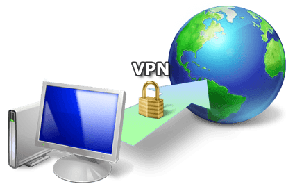

August Moliere is an IT guy using his skills to help fellow masculine men. In his free time he enjoys european culture and decries rootless cosmopolitanism.


The events of recent weeks have proven that it’s not a safe world for masculine men out there. Now more than ever men should be looking into increasing their personal security. As an IT guy I have been thinking for a solution to the problems men face. Below are measures I can recommend one take to increase his security.
Disclaimer: this guide caters to Windows users, but others can still find value.

VPN stands for Virtual Private Network. To understand what a VPN does, first you must understand what an IP is. IP is something like a computer passport number. Each electronic device has it’s own IP address. Websites register your IP when you use them—this makes it easy to find your location, your device, and therefore your identity. A VPN makes it so when you connect to a website you first go through the VPN server. So when you connect to a website instead of seeing your computer IP it shows the IP the VPN provides you. Roosh recently wrote on VPNs.
Example (manually changing IP):
The problem here relies on the credibility of the VPN provider. Many VPN providers register your activity and can then hand it to a government organization if they so demand. Even VPNs that promised not to do this, broke their promise. There is an agreement between the Anglo-speaking countries that affects VPN users. The government can ask the provider for your data, and there is nothing your provider can do to not give it to them.
These countries are referred to as 5 eyes. Currently, similar agreements are being done with other countries, referred to as the 14 eyes: United Kingdom, United States, Australia, Canada, New Zealand, Denmark, France, the Netherlands, Norway, Germany, Belgium, Italy, Spain, Sweden
Definitely get a paid VPN. Free VPNs are not an answer, they most likely register some info on you and are slow. After some research on VPN providers I have found some VPN proviers that are outside the 14 eyes, use encryption, accept Bitcoin, support OpenVPN and have a no logging policy and an overall good reputation.
Here are my findings: blackVPN (Hong Kong, 25 servers, 100 dollars a year), Cryptostorm (Iceland, 13 servers, 52 dollars a year), HIDEme (Malaysia, 85 servers, 65 dollars a year), NordVPN (Panama, 52 servers, 48 dollars a year), Perfect Privacy (Panama, 40 servers, 150 dollars a year), Privatoria (Czech Republic, 12 servers, 23 dollars a year).
One VPN provider attracted my attention particularily, that being BolehVPN, since it is one of the only two providers that offers Tor to VPN alongside VPN to Tor (the other one being AirVPN, which is based in Italy, therefore part of 14 eyes), so if you want that particular set-up, check it out.
Make sure to check the VPN provider’s canary. It is a document that confirms that the VPN provider was not touched by the government. It should be updated every month, if it isn’t unsubscribe. Example.
Sign up for an anonymous e-mail account using Tor and use a Bitcoin Mixer to send Bitcoins to a newly generated address in your local wallet. Alternatively, use the Bitcoin-OTC to purchase Bitcoins ‘over the counter’ from a person, rather than an exchange. Then, use a patched Bitcoin client, such as coderrr’s anonymity patch to avoid linking the newly generated address to any of your pre-existing Bitcoin addresses. —Andrew, Private Internet Access.
Use the pro version of VPNCheck to automatically disconnect from internet when losing connection to VPN and to prevent DNS leaks. Or search for the manual way of doing it
Another measure to consider is using two or more VPNs. Basically activate one VPN first, then another one, done.
Not likely to affect everyone. PPTP is the weakest VPN protocol and if you use one of the VPNs I mentioned before you will likely use a better protocol, but for those who do, there is a possible flaw that you can correct like this—for Windows Vista and above: Open cmd prompt and type: netsh interface teredo set state disabled.
Here’s a guide.
There are three tiers of antiviruses: antivirus sofwtare, internet suite and premium security suites. Read about them here. At minimum use Microsoft Security Essentials (free software from Microsoft), though paid antiviruses (such as Bitdefender, Kaspersky, etc.) are better.
Many popular browsers are not highest ranked in regards to keeping your anonymity. For example, while Chrome is theoretically secure from spyware and adware, their stance on privacy can be summarized as follows:
He went on, speaking about the future of search. With your permission you give us more information about you, about your friends, and we can improve the quality of our searches. We don’t need you to type at all. We know where you are. We know where you’ve been. We can more or less know what you’re thinking about.
There are factors one must be careful of: cookies, encryption (https), tracking ads, javascript exploits, canvas fingerprinting and others. A writeup on these would take a long time so research them on your own if you wish. I will just mention browsers that avoids these issues.
Instead of using the google search engine use disconnect.me installed into Tor (or install as extension into Firefox)
Tor Browser is an internet browser designed for online anonymity. It is a modified version of Firefox with add-ons pre-installed. Tor works somewhat similar to the VPN concept. Before connecting to a website you go through “nodes”. Which are private stations, each with its own IP. So instead of showing your IP, it will show the IP of the last node you traveled through.
The downside of Tor is that it is slow, due to the fact that it works thanks to enthusiastic individuals. Tor is not for casual usage, but specifically for privacy needs, particularly posting online or searching the deep web.
Tor has some weaknesses you must be aware of:
Oftentimes when you are using a network, the network provider can’t see what you are browsing, but they can see that you are using Tor. You can use things like a bridge obfuscator, obfsproxy, or setting VPN to Tor. This is a complex issue, here is a guide on hiding tor usage from ISP (internet service provider).
The trustworthiness of exit relays. When the government found out about the popularity of Tor they created their own exit nodes, that acted as honey traps. To fight this, use a TailsOS (or booted off a flash stick, DVD or SD card in a public wifi spot, like a coffee shop). That way even if the final node was a trap, it would only lead to your TailsOS profile, not your general one. Check so the public wifi spot you are using has no cameras around, so they will not be able to check camera footage of who used a laptop in that particular time frame. Don’t forget to log off when finished. Alternatively, use Tor to VPN.
Often many programs, like torrents, will ignore Tor, even if you manually force them and just connect straight away, thus giving you away. The answer is to not use torrents with Tor. I REPEAT, NO FILE SHARING ON TOR.
There are of course other various vulnerabilities out there. And as a reminder, Silk Road, a large black market was cracked in the past.
Tor is good on its own but even better when combined with a VPN. There are 2 methods : Tor to VPN, VPN to Tor. Both have their weaknesses. First one allows ISPs to see you use Tor, the second does not protect from malicious end relays . VPN to Tor masks your Tor usage, Tor to VPN protects from malicious exit nodes.
I have thought of using VPN to Tor to VPN, which should theoretically accomplish both. For VPN to Tor use a secure VPN provider and add non-Tor traffic to mask usage. For Tor to VPN, pay with anonymized bitcoins and never connect to your VPN without connecting to Tor first.
VPN to Tor: The Harvard bomb hoaxer was de-anonymized because he was the only one in college using Tor. If he went through a VPN first, he would have been harder to track (assuming his VPN provider did not keep logs).
Tor to VPN: Protects from malicious exit nodes, on the other hand. TailsOS with public wifi accomplishes the same. Of course, either is better than nothing. Which you choose depends on your needs. The only two providers that offer Tor to VPN are AirVPN (based in Italy, so part of 14 eyes, but not the 5 eyes) and BolihVPN.
While using Tor is advisable, for casual usage you can set Firefox to be very secure with the help of add-ons and custom settings. Here is a guide.
Certain websites ban Tor (e.g. Imgur). Use an alternative then (e.g. Anonmgur). Otherwise use VPN to Tor. There are VPN providers that cycle IPs, so that helps with VPN IP range bans.
Windows is not very safe. There have been rumors of NSA backdoors on Windows devices. Supposedly NSA can store almost everything you do online (including Facebook, popular mail providers, and possibly things offline).
There are some good alternatives out there, TailsOs being one of them. TailOS is an operating system specifically designed for security and is Linux based. It can be ran off a USB stick. For those extra paranoid, use Tor in a public space on a laptop with TailsOS loaded of a flash drive.
Of course TailsOS is not very suitable for day to day needs, so use it for shitlord purposes. For your day to day purposes you might have to use Windows, but for the love of god, DO NOT use Windows 10, it is absolutely awful for security.
I prefer Windows 7. If you are more advanced, you can use alternative platforms like Debian or some distro of Linux or whatever. Just beware, many programs for Windows do not have alternatives on Linux based systems. If you are a casual, moving to another platform can be difficult. And if you really are a nerd, then you can look into some exotic setup like Qubes + Whonix or whatever other myriad of OS and Virtual Machines there are around.
I2P network: While Tor is designed to anonymously browse the normal web and onion sites, I2P is a web of it’s own. Preferably to be browsed through Tor. It allows (slow) torrenting and great for messaging, IRC, file sharing, secret websites (.i2p)
Freenet – Freenet is a peer-to-peer platform for censorship-resistant communication.
Bitcoin is virtual currency that has taken the world by storm in recent years. There are other online currencies competing against it, but Bitcoin is the most established online currency. It is the default virtual currency. Bitcoin is not for daily usage, rather online purposes. There are VPN services that accept payment with bitcoin. There are even services that will store physical gold in exchange for bitcoin.
Truly a financial revolution. Unfortunately, it’s also a big headache for tax services. Bitcoin is also infamous for being used to purchase illegal stuff on the internet black market. But you wouldn’t use it for that, would you?
To start using bitcoins just register a bitcoin wallet and you are good to go.
Bitcoins are not anonymous by default. They must be washed and anonymized. Buying through Tor + Coin mixing + anonymity patched bitcoin client. Over the counter (OTC) bitcoins are an option as well.
Never use the same password twice. Try to make it long and contain both characters and numerals, etc. Hint : use L33t, [email protected]|)333. If you can, add non English characters even better, PåSsWøRд0, but you can’t always do it.
If you are unsure, use a safe password generator, such as Master Password To manage passwords use a password manager, such as KeePassX.
Use throwaway email to register in most places. Never use your public e-mail to register anywhere controversial like Neomasculintiy affiliated websites.
For general mail needs, use a mail provider that is focused on security. I found two outside 14 eyes, in Switzerland: ProtonMail (free), NeoMailBox (50$/year, custom domain option ex : [email protected]funny.com, [email protected]customName.com)
Remember to still use personal safety measures, like additional encryption. Never trust 2nd parties with your protection completely.
Another interesting move is to become a provider yourself, in essence create your personal Gmail by turning your PC into a mail server. To do this, use Mail-in-a-box. They have good guide on their site https://mailinabox.email/.
A mail client is a program that allows you to manage mail from the cloud by saving it locally, by connecting to the email host, such as Gmail. The default mail client in Windows is Microsoft Outlook (which sucks). I will focus on my preffered mail client setup.
Beware of a law that allows government officials to read any mail hosted online older than 6 months without a warrant. Use an external email client like Thunderbird or Enigmail, download your emails and store them locally. Never leave them on the server.
Look into email alternatives such as : Bitmessage, I2P-Bote, Retroshare
Encryption is the process of making a message unreadable to third parties. Some programs do it for you, manually you can use a program like GPG4win or similar which uses PGP encryption.
The way it works is this :
1) You create your public key.
2) You digitally sign the information with your private key, so when the other side verifies it with their own public key, they can confirm that it is indeed YOUR public key. (WebOfTrust)
3) When someone wants to write to you he encrypts it using the public key you provided, or the other way around.
4) You then use your PRIVATE key to decrypt the message he sent you.
Here is a tutorial:
There are encryption possibilities for your phone as well. First, set encryption on your Android device. Second, use an app called Signal
When you take a photo with a particular device, often it registers what device you used to take the photo, when and where it was taken. To avoid this problem, before posting online use an EXIF scrubber. It is a piece of software that deletes all information that might incriminate you.
Some examples are BatchPurifier Lite and Exif Pilot. Also, careful with what photos you post of course, nothing that could indirectly lead to you.
Torrenting can be useful for file transferring. If you plan to torrent anything or share something with friends, look into safer peer to peer torrenting. P2P is good for small files. Generic torrent services are good for larger files.
One advice I have is avoid torrent programs known for their untrustworthiness, such as BitVomit (BitComet) and uTorrent (closed source + adBloat). qBit, Deluge, Tribler (this one’s interesting) are good options (open source and lightweight).
Beware of laws in certain countries that forbid downloading stuff online. Germany is particularly infamous for this. There are ways to combat this issues through VPNs. But DO NOT USE TOR, I REPEAT, DO NOT USE TOR FOR FILE SHARING. For even more secure anonymous file sharing look into I2P (beware avg speed: 30 kbs per sec)
As for streaming, Popcorn Time and other analogous services (such as PornTime) are used to stream new movies (and porn) respectively. They are based on BitTorrent technology. They are relatively safe services, as long as you use a VPN.
Use VeraCript, a piece of software designed to encrypt disk partitions or whole USB drives. It is the successor of TrueCrypt (which stopped development after feds asked them to include vulnerabilities).
Also, another interesting technique is to hide text, videos and other stuff in pictures, it’s called Steganography.
The 3 pieces of software I am about to recommend are TOX , RetroShare and diaspora.
TOX is a Skype clone with focus on privacy.
Retroshare is a private network service. You can use it for private mailing and other purposes. Here is a demonstration video:
diaspora is a social network designed for privacy and decentralization https://diasporafoundation.org/
Another interesting possibility for ROK people is to use a .onion or .i2p domain or freenet for a sort of “secret” webpage, unavailable to casuals out there.
I think this advice will benefit the ROK community for protecting their anonymity and using secret backup channels for future purposes. Here is a quick cheat sheet:
Casuals: VPN paid with shuffled bitcoin + VPNcheck Pro, Signal on Android, Firefox with add-ons for casual use, Tor for shitlordery, Encrypted mail and hard disk, password manager, ProtonMail for daily use, throwaway mail—everything else, Thunderbird with add-ons, EXIF scrubber. Download email on PC then delete off server.
Advanced: Same as above + Tor combined with VPN, I2P and Freenet, (TBitmessage I2P-Bote Retroshare) instead of mail, becoming mail provider, diaspora*
Super advanced: Same as above + Multiple VPNs, Using Tor off of TailsOS in a public space where cameras cannot film you. Alternative OS and Virtual machines. Secure you router.
Here’s a good collection of security resources.
Always remember, there is no way to remain completely anonymous, just ways to make it harder to be detected.
Read More: 5 Ways To Improve Your Online Game